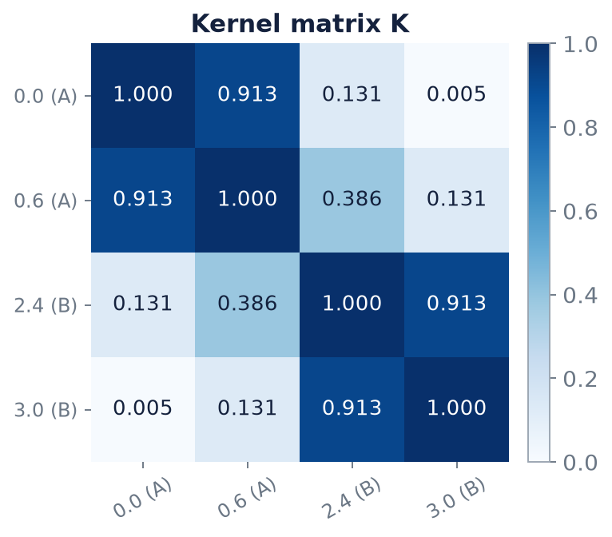

Chapter 8: Quantum-Kernel Support Vector Machines¶
Chapter 6 defined the fidelity kernel and Chapter 7 showed how to estimate one entry of it. This chapter assembles the kernel into a working classifier. A support vector machine needs the whole \(N\times N\) table of kernel values, so we first count what that costs and what goes wrong with a noisy estimate of it. Then comes the three-stage pipeline in which the quantum device is only a similarity oracle, followed by three worked problems: evaluating a trained decision function, building a four-point kernel classifier from scratch with the SVM dual solved by hand, and an experiment on real flower data in which the simplest quantum kernel matches the classical one and the most elaborate one does worse than a coin flip. The chapter ends with the theory of when a quantum kernel can help at all.
8.1 The Gram matrix in practice¶
For \(N\) training points the Gram matrix \(K_{ij}=k(x_i,x_j)\) is symmetric with a unit diagonal, so it has \(N(N-1)/2\) independent off-diagonal entries, and each entry is estimated from its own circuit. With \(M\) shots per entry the total is about
For \(N=10^3\) and \(M=10^4\) this is \(\tfrac12\cdot10^6\cdot10^4=5\times10^9\). The quadratic scaling in \(N\) is the practical bottleneck of quantum kernels, and it is worse than in the classical case because each entry needs thousands of shots.
Two further problems arise from finite sampling.
The estimate \(\hat K\) can fail to be positive semidefinite. In exact arithmetic the table is PSD (Chapter 6). Sampling and device noise break that: negative eigenvalues appear, and most SVM solvers assume they will not and behave unpredictably otherwise. The standard repairs are
- eigenvalue clipping: diagonalise \(\hat K=V\Lambda V^{\mathsf T}\) and replace \(\Lambda\) by \(\max(\Lambda,0)\), which projects \(\hat K\) onto the PSD cone; or
- a Tikhonov shift \(\hat K+\lambda I\), with \(\lambda\) at least as large as the magnitude of the most negative eigenvalue.
K_hat = np.array([[1, .9, 0], [.9, 1, .9], [0, .9, 1]]) # a noisy estimate (Exercise 8.3)
w, V = np.linalg.eigh(K_hat) # K_hat symmetric, possibly indefinite
K_clipped = (V * np.clip(w, 0, None)) @ V.T # eigenvalue clipping
K_shifted = K_hat + max(0.0, -w.min()) * np.eye(len(w)) # Tikhonov shift
The estimate drifts towards the identity. Noise drives off-diagonal entries towards zero, pushing \(\hat K\) towards \(I\). A Gram matrix near the identity says every point is similar only to itself: the model is memorising, not learning. This is the diagnostic to watch.
8.2 The quantum-kernel SVM pipeline¶
Put the pieces together and the pipeline has three stages.
- Estimate. Run circuits to fill the training Gram matrix \(\hat K\) and the test-train kernel rows.
- Solve. Classically maximise the convex SVM dual over the \(\alpha_i\), subject to \(0\le\alpha_i\le C\) and \(\sum_i\alpha_iy_i=0\).
- Classify. For a new point \(x\), estimate \(k(x_i,x)\) for the support vectors only, then evaluate the decision function
with \(y_i\in\{\pm1\}\) the labels and \(b\) the bias.
Key idea
The optimisation is convex with a unique optimal value, so there are no barren plateaus and no local minima. The quantum device acts only as a similarity oracle: it supplies numbers, and the classical solver keeps all its convergence guarantees. The residual difficulty moves elsewhere: choosing \(U_\varphi\), the regularisation \(C\), and a shot budget that keeps \(\hat K\) accurate. Convexity does not make the method good; it makes the training reliable.
Note that at inference time only kernel entries against the support vectors are needed, which limits the cost.
Example 8.1: classifying with a trained quantum-kernel SVM
A quantum-kernel SVM has been trained and retains two support vectors: \(x_1\) with \(y_1=+1\) and weight \(\alpha_1=0.8\), and \(x_2\) with \(y_2=-1\) and weight \(\alpha_2=0.8\), with bias \(b=-0.1\).
(a) Classify a test point with \(k(x_1,x)=0.9\) and \(k(x_2,x)=0.3\). (b) Classify a test point with \(k(x_1,x)=0.4\) and \(k(x_2,x)=0.75\).
Step 1, decision function. Only the support vectors contribute: \(f(x)=0.8\,k(x_1,x)-0.8\,k(x_2,x)-0.1\), the minus sign coming from \(y_2=-1\).
Step 2, point (a). \(f=0.8(0.9)-0.8(0.3)-0.1=0.72-0.24-0.1=0.38>0\). The point is much closer to the positive support vector.
Step 3, point (b). \(f=0.8(0.4)-0.8(0.75)-0.1=0.32-0.60-0.1=-0.38<0\). Here the negative support vector dominates.
Answer. (a) \(f=+0.38\), class \(+1\); (b) \(f=-0.38\), class \(-1\). Only kernel values enter, so the quantum device acts purely as a similarity oracle. Note that the bias shifts both scores by the same amount.
8.3 A complete worked example: four points on a line¶
Example 8.2: a quantum kernel and a support vector machine
Use the feature map \(\lvert\varphi(x)\rangle=R_Y(x)\lvert0\rangle\) as a kernel, with \(y=+1\) for class A and \(y=-1\) for class B. The training data are \(x=0.0\) (A), \(0.6\) (A), \(2.4\) (B), \(3.0\) (B); the test points are \(x^*=1.0\) and \(x^*=2.0\).
(a) Derive \(k(x,x')\) in closed form. (b) Compute the \(4\times4\) kernel matrix. (c) Classify \(x^*\) by the score \(s(x^*)=\sum_iy_ik(x^*,x_i)\). (d) Train an SVM on the kernel and compare.
Step 1, the kernel. By Example 6.1, \(k(x,x')=\cos^2\frac{x-x'}2\). It depends only on the distance between points: \(1\) when they coincide, \(0\) when they are \(\pi\) apart.
Step 2, the matrix. For instance \(k(0,0.6)=\cos^20.3=0.9127\), \(k(0,2.4)=\cos^21.2=0.1313\), \(k(0.6,2.4)=\cos^20.9=0.3864\), \(k(0,3.0)=\cos^21.5=0.0050\). The whole matrix is
It is large within a class and small across: the kernel already sees the two groups.
Step 3, the kernel score. The kernel values between each test point and the four training points are
| \(x^*\) | \(k(\cdot,0.0)\) | \(k(\cdot,0.6)\) | \(k(\cdot,2.4)\) | \(k(\cdot,3.0)\) |
|---|---|---|---|---|
| 1.0 | 0.7702 | 0.9605 | 0.5850 | 0.2919 |
| 2.0 | 0.2919 | 0.5850 | 0.9605 | 0.7702 |
so \(s(1.0)=0.7702+0.9605-0.5850-0.2919=+0.8538\Rightarrow\) class A, and \(s(2.0)=0.2919+0.5850-0.9605-0.7702=-0.8538\Rightarrow\) class B. The scores are exact mirror images: \(1.0\) and \(2.0\) sit symmetrically about \(1.5\), midway between the classes.
Step 4, the SVM, by hand. The two points closest to the gap, \(x=0.6\) and \(x=2.4\), are the natural support vectors. The constraint \(\sum\alpha_iy_i=0\) forces \(\alpha_1=\alpha_2=\alpha\) for the two of them, and both must sit exactly on the margin, \(y\,f=1\). With \(f(x)=\alpha\big[k(x,0.6)-k(x,2.4)\big]+b\):
Adding gives \(\alpha=\dfrac{1}{1-0.3864}=1.6297\); subtracting gives \(b=0\). To confirm that the other two points are not support vectors, check \(y_if(x_i)\ge1\) for them: \(f(0)=1.6297\,(0.9127-0.1313)=1.2734\ge1\), and by symmetry \(f(3.0)=-1.2734\) with \(y=-1\). The weights satisfy the box constraint for any \(C\ge1.63\) (the program below uses \(C=10\)). The decision function is
so \(f(1.0)=1.6297(0.9605-0.5850)=+0.612\) and \(f(2.0)=-0.612\). An SVM trained on the precomputed kernel matrix in software makes the same choice of support vectors, \(x=0.6\) and \(x=2.4\), and predicts A for \(1.0\) and B for \(2.0\), agreeing with the hand score.
Answer. \(k=\cos^2\frac{x-x'}2\); \(x^*=1.0\) is class A and \(x^*=2.0\) is class B, by the hand score and by the SVM. The quantum device produced every number in \(K\); the SVM itself is ordinary classical software.

The program below reproduces all of this. The kernel matrix is computed by simulating the encoding circuits and taking overlaps, and is compared with the closed form.
from sklearn.svm import SVC # the classical solver; its only job is the convex dual
X_train = np.array([0.0, 0.6, 2.4, 3.0])
y_train = np.array([+1, +1, -1, -1])
X_test = np.array([1.0, 2.0])
def kernel_matrix(A, B):
"""Entry (i, j) is |<phi(A_i)|phi(B_j)>|^2 for the encoding R_Y(x)|0>."""
SA = [ry(a) @ ket0 for a in A]
SB = [ry(b) @ ket0 for b in B]
return np.array([[abs(np.vdot(s, t)) ** 2 for t in SB] for s in SA])
K_train = kernel_matrix(X_train, X_train)
K_test = kernel_matrix(X_test, X_train)
closed = np.cos((X_train[:, None] - X_train[None, :]) / 2) ** 2
np.set_printoptions(precision=4, suppress=True)
print(K_train)
print(f"largest difference from cos^2((x-x')/2): {np.max(np.abs(K_train - closed)):.0e}")
print(K_test)
for xs, row in zip(X_test, K_test):
s = row @ y_train
print(f"x* = {xs:.1f}: score = {s:+.4f} -> class {'A' if s > 0 else 'B'}")
svm = SVC(kernel="precomputed", C=10.0).fit(K_train, y_train)
print("support vectors:", X_train[svm.support_])
print("SVM decision values:", svm.decision_function(K_test))
[[1. 0.9127 0.1313 0.005 ]
[0.9127 1. 0.3864 0.1313]
[0.1313 0.3864 1. 0.9127]
[0.005 0.1313 0.9127 1. ]]
largest difference from cos^2((x-x')/2): 2e-16
[[0.7702 0.9605 0.585 0.2919]
[0.2919 0.585 0.9605 0.7702]]
x* = 1.0: score = +0.8538 -> class A
x* = 2.0: score = -0.8538 -> class B
support vectors: [2.4 0.6]
SVM decision values: [ 0.612 -0.612]
8.4 Real data: a simple kernel against an elaborate one¶
A feature map is a choice, and a more elaborate one is not automatically better. Consider 100 iris flowers, setosa against versicolor, described by two features, sepal length and sepal width. Twelve flowers (chosen by a fixed random permutation) are used to learn and the other twenty unseen ones to test. The same pipeline, quantum kernel plus SVM, is run with four different kernels and compared with a classical RBF kernel.
from sklearn.datasets import load_iris
from sklearn.preprocessing import MinMaxScaler
iris = load_iris()
keep = iris.target < 2 # setosa vs versicolor
Xi = iris.data[keep][:, [0, 1]] # sepal length, sepal width
yi = np.where(iris.target[keep] == 0, 1, -1)
idx = np.random.default_rng(3).permutation(len(Xi))
tr, te = idx[:12], idx[12:32] # 12 to learn, 20 to test
def angle_state(x):
"""Angle encoding: one R_Y per feature, no entanglement (the 2-D version of Example 8.2)."""
return kron(*[ry(xj) @ ket0 for xj in x])
def zz_state(x, reps=1):
"""ZZ feature map: H, P(2x_j), then CNOT-P-CNOT phase on each pair, repeated `reps` times."""
n = len(x)
psi = np.zeros(2 ** n, dtype=complex); psi[0] = 1
for _ in range(reps):
psi = kron(*[H] * n) @ psi
psi = kron(*[np.diag([1, np.exp(2j * xj)]) for xj in x]) @ psi
for j in range(n):
for k in range(j + 1, n):
phi = 2 * (np.pi - x[j]) * (np.pi - x[k])
bits = lambda b, q: (b >> (n - 1 - q)) & 1
phase = [np.exp(1j * phi * (bits(b, j) ^ bits(b, k))) for b in range(2 ** n)]
psi = np.array(phase) * psi # CNOT-P-CNOT is a phase on the parity
return psi
def gram(state, A, B):
SA, SB = [state(a) for a in A], [state(b) for b in B]
return np.array([[abs(np.vdot(s, t)) ** 2 for t in SB] for s in SA])
def accuracy(state, hi):
sc = MinMaxScaler((0, hi)).fit(Xi[tr]) # scale features into [0, hi]
A, B = sc.transform(Xi[tr]), sc.transform(Xi[te])
svm = SVC(kernel="precomputed", C=10.0).fit(gram(state, A, A), yi[tr])
return np.mean(svm.predict(gram(state, B, A)) == yi[te])
print("iris, 12 training flowers, 20 unseen:")
print(f" angle map, scaled to [0, pi] {accuracy(angle_state, np.pi):4.0%}")
print(f" ZZ, 1 rep, scaled to [0, 1] {accuracy(lambda x: zz_state(x, 1), 1.0):4.0%}")
print(f" ZZ, 2 reps, scaled to [0, pi] {accuracy(lambda x: zz_state(x, 2), np.pi):4.0%}")
sc = MinMaxScaler((0, np.pi)).fit(Xi[tr])
rbf = SVC(kernel="rbf", C=10.0).fit(sc.transform(Xi[tr]), yi[tr])
print(f" classical RBF kernel {np.mean(rbf.predict(sc.transform(Xi[te])) == yi[te]):4.0%}")
iris, 12 training flowers, 20 unseen:
angle map, scaled to [0, pi] 100%
ZZ, 1 rep, scaled to [0, 1] 90%
ZZ, 2 reps, scaled to [0, pi] 30%
classical RBF kernel 100%
| Kernel | Feature scaling | Test accuracy |
|---|---|---|
| angle map (\(R_Y\) per feature) | \([0,\pi]\) | 100% |
| ZZ, 1 repetition | \([0,1]\) | 90% |
| ZZ, 2 repetitions | \([0,\pi]\) | 30% |
| classical RBF | \([0,\pi]\) | 100% |
The ZZ map on the range \([0,\pi]\) mixes the features so strongly across that range that its idea of "similar" stops matching the classes. Shrinking the range to \([0,1]\), a smaller bandwidth, recovers \(90\%\). The result is the honest outcome of one fixed split, not a tuned one, but its message is clear: the simplest quantum kernel matches the classical one, and the most elaborate one does worse than a coin flip. Expensive cloth does not always fit.
8.5 When can a quantum kernel help?¶
Four observations summarise what is known.
Alignment, not richness. Performance tracks the kernel-target alignment
which compares the Gram matrix with the outer product \(yy^{\mathsf T}\) of the labels (whose Frobenius norm is \(N\) when \(y_i=\pm1\)). \(A=1\) means \(K\) is exactly proportional to \(yy^{\mathsf T}\); larger values predict better learning. It can be computed from the estimated Gram matrix before training. For the four-point Gram matrix of Example 8.2, \(y^{\mathsf T}Ky=6.343\) and \(\lVert K\rVert_F=2.775\), so \(A=6.343/(4\times2.775)=0.571\); the identity matrix, a kernel that recognises no structure, scores \(1/\sqrt N=0.5\) for \(N=4\).
Over-expressive maps fail. If \(U_\varphi\) forms an approximate 2-design (a distribution of unitaries matching the random unitary group to second order), then \(k(x,x')\) concentrates exponentially in \(n\), so \(\hat K\to I\) unless the number of shots grows exponentially (Thanasilp and co-authors, 2024). This is the kernel-method analogue of barren plateaus and carries the same exponential shot cost.
Inductive bias must be encoded. A useful feature map reflects known structure in the data: symmetries, periodicity, group structure.
A proven separation exists, but on an artificial task. For a concept class built on the discrete logarithm, a quantum kernel provably learns where classical algorithms cannot, assuming fault-tolerant hardware and standard cryptographic assumptions (Liu, Arunachalam and Temme, 2021). It is a proof of principle, not a statement about real datasets.
Take-away
The known provable advantage is on an artificially structured task. For generic data, expressivity buys concentration, not accuracy.
8.6 Summary¶
Chapter Summary
- A Gram matrix needs \(N(N-1)/2\) circuits; with \(M\) shots each, about \(\tfrac12N^2M\) executions (for \(N=10^3\), \(M=10^4\): \(5\times10^9\)).
- The estimate \(\hat K\) can be indefinite; repair by eigenvalue clipping or a Tikhonov shift. Noise pushes \(\hat K\) towards the identity: memorisation, not learning.
- The pipeline: estimate \(\hat K\) on the device, solve the convex dual classically, classify with \(f(x)=\sum\alpha_iy_ik(x_i,x)+b\) using only the support vectors.
- The optimisation is convex: no local minima, no barren plateaus. The quantum device is a similarity oracle.
- For the four-point example the SVM has support vectors \(0.6\) and \(2.4\) with \(\alpha=1/(1-0.3864)=1.63\) and \(b=0\).
- On real data the plain angle kernel scored \(100\%\), matching the RBF kernel; the elaborate ZZ kernel scored \(90\%\) at a small bandwidth and \(30\%\) at a large one.
- A kernel helps when it is aligned with the labels and encodes real structure; over-expressive maps concentrate. The only proven separation is on a discrete-logarithm task.
8.7 Exercises¶
Exercise 8.1
How many circuit executions are needed to fill the Gram matrix for \(N=500\) training points at \(M=2000\) shots per entry?
Answer
There are \(N(N-1)/2=124\,750\) independent off-diagonal entries, so \(124\,750\times2000\approx2.5\times10^8\) executions. The approximation \(\tfrac12N^2M\) gives \(2.5\times10^8\) as well.
Exercise 8.2
A trained SVM has support vectors with \((\alpha,y)=(0.5,+1)\) and \((0.5,-1)\) and bias \(b=0.2\). A test point has kernel values \(0.6\) and \(0.2\) against them. Classify it.
Answer
\(f=0.5(0.6)-0.5(0.2)+0.2=0.3-0.1+0.2=0.4>0\), so class \(+1\).
Exercise 8.3
An estimated Gram matrix is \(\hat K=\begin{pmatrix}1&0.9&0\\0.9&1&0.9\\0&0.9&1\end{pmatrix}\) with eigenvalues \(2.273\), \(1\) and \(-0.273\). Repair it by (i) eigenvalue clipping and (ii) a Tikhonov shift. What are the diagonals of the repaired matrices?
Answer
(i) Replacing \(-0.273\) by \(0\) gives \(\begin{pmatrix}1.068&0.804&0.068\\0.804&1.136&0.804\\0.068&0.804&1.068\end{pmatrix}\) with eigenvalues \(2.273,1,0\): positive semidefinite, but the diagonal is no longer exactly \(1\). (ii) Adding \(\lambda I\) with \(\lambda\ge0.273\), for instance \(\lambda=0.3\), gives eigenvalues \(2.573,1.3,0.027>0\) and a diagonal of \(1.3\). Both repairs change the diagonal; a common follow-up is to rescale so that the diagonal is \(1\) again.
Exercise 8.4
For the four-point Gram matrix of Example 8.2, the alignment is \(0.571\). What is the alignment of a kernel that equals \(yy^{\mathsf T}\) exactly, and of the identity kernel \(K=I\) with \(N=4\)?
Answer
For \(K=yy^{\mathsf T}\): \(y^{\mathsf T}Ky=(y^{\mathsf T}y)^2=N^2=16\) and \(\lVert K\rVert_F=\lVert y\rVert^2=N=4\), so \(A=16/(4\times4)=1\). For \(K=I\): \(y^{\mathsf T}y=4\) and \(\lVert I\rVert_F=2\), so \(A=4/(4\times2)=0.5=1/\sqrt N\).
Exercise 8.5
Why does classification of a new point need kernel values only against the support vectors?
Answer
In \(f(x)=\sum_i\alpha_iy_ik(x_i,x)+b\) the points with \(\alpha_i=0\) contribute nothing, so only the support vectors matter. This limits the number of quantum circuits needed at inference time.
Exercise 8.6
Solve the SVM dual for two points \(x=0\) (\(y=+1\)) and \(x=\pi\) (\(y=-1\)) with the kernel \(\cos^2\frac{x-x'}2\). Where is the decision boundary?
Answer
\(k(0,\pi)=0\), so \(K=I\). With \(\alpha_1=\alpha_2=\alpha\), the dual is \(2\alpha-\tfrac12(\alpha^2+\alpha^2)=2\alpha-\alpha^2\), maximal at \(\alpha=1\) (needs \(C\ge1\)). \(f(x)=\cos^2\frac x2-\cos^2\frac{x-\pi}2+b\), and the margin condition \(f(0)=1\) gives \(b=0\). At \(x=\pi/2\) both kernels are \(\tfrac12\), so \(f=0\): the boundary is at the midpoint \(\pi/2\).
Exercise 8.7
Explain why an encoding that makes all kernel values very small, so that \(\hat K\approx I\), cannot generalise even though the SVM trains without difficulty.
Answer
With \(K\approx I\) a new point has almost zero similarity to every training point, so \(f(x)\approx b\) whatever \(x\) is: the model memorises the training labels. The optimisation is convex and easy, but there is no structure for it to learn. This is why concentration of the kernel is a failure of the model, not of the optimiser.
Exercise 8.8
In Section 8.4 the ZZ map with two repetitions on \([0,\pi]\) scores \(30\%\) on a two-class problem. Why is this worse than a coin flip, and why is that not a contradiction?
Answer
A random guess scores about \(50\%\). A systematic \(30\%\) means the kernel's notion of similarity is anti-correlated with the classes on this split: nearby points in the kernel's sense are often of different classes. That is possible for a poorly chosen feature map, and it shows that the model has learned something, but the wrong thing. Because only twenty test points were used, the number is also noisy, which is another reason to treat single-split results with caution.